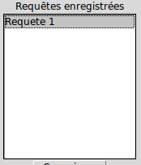
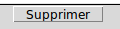

Le champs d'entrée de la fenêtre principale est prévu pour taper une requête SQL. Le point-virgule habituellement utilisé n'est pas nécessaire ici.
Cliquez sur pour sauvegarder votre requête si vous souhaitez la réutiliser un jour. Vous devez alors lui donner un nom, qui apparaîtra dans le menu déroulant d'à côté.

Pour supprimer un requête, sélectionner l'élement du menu déroulant puis cliquez sur 
Cliquez sur pour envoyer la requête à PGSQL et obtenir vos données.
Cliquez sur pour vider le champs-texte
Pour permettre au logiciel d'accéder à la base de données, veuillez modifier les lignes 17 à 19 du fichier "libndat". Complétez le nom de votre base de données dans 'database' et votre nom d'utilisateur dans 'user'.
SELECT is failed AS Error_Rate_n100k10Louvain
FROM ref.donnee
WHERE graphname = 'n100k10Louvain.tlp'
SELECT isfailed, graphname
FROM ref.donnee
ORDER BY graphname
SELECT isfailed, user, graphname
FROM ref.donnee
ORDER BY user, graphname

Stat'nDat - 11 Mai 2015 Accueil Analyse statistique